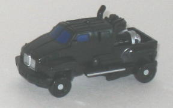
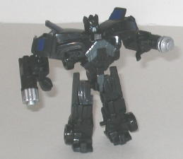
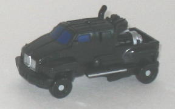
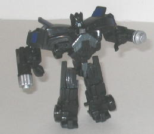
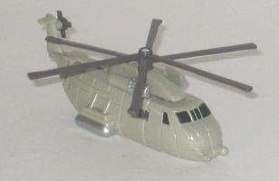
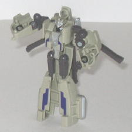

 
Allegiance : Autobot
Size : Legend
Difficulty of Transformation : Very Easy
Color Scheme : Black and some silver, very dark blue, sky blue, and light metallic silvery blue
Individual Rating : 7.0
 Ironhide
vs. Desert Blackout ("Allspark Battles" Legends)
Ironhide
vs. Desert Blackout ("Allspark Battles" Legends)
Price
: ~$8 U.S.
Overall Rating
: 7.2
 Ironhide
Ironhide


Allegiance
: Autobot
Size
: Legend
Difficulty of Transformation
: Very
Easy
Color Scheme
: Black and some silver,
very dark blue, sky blue, and light metallic silvery blue
Individual Rating
: 7.0
Ironhide's vehicle mode
is definitely the weakest point of the toy-- when compared to how the Topkick
actually looks in the movie, this mode is definitely malformed. It's way
too long proportionally, not wide enough, the truck bed is too long and
the front hood too short. There's also Ironhide's two fists and their attached
guns just sitting right THERE in the middle of the truck bed, without any
attempt whatsoever to hide them. There's also a pretty noticeable hollow
gap near the front of the vehicle if you look at it from a side view. There's
no other robot extras, though, which is always a good thing. The mold detailing
is also very good, with all the necessary details being there despite the
small size. The paint detailing is a little sparse, but not too much so--
the windows are at least painted, as is the front bumper and the side rails.
Wish the smokestacks were painted silver as well, though-- Ironhide sure
has a whole lotta black, that's for sure.
Ironhide's transformation
is very simple, but it does the job-- for the size, Ironhide looks fantastic
in robot mode. His arms actually WORK, too, unlike on the deluxe-sized
Fast
Action Battler
version. (He can move front-to-back at the shoulders,
though if you move them back too far it starts to mess with his head placement,
and his elbows and hips are on ball joints.) Ironhide's proportions are
fantastic even ignoring his small size, and all the appropriate mold detailing
is there-- heck, his chest in particular looks better than on any other
iteration of the character. The details on his mouth are definitely off,
though-- he looks like he has some sort of odd bird beak for a mouth instead
of his more bovine-like maw.
Desert
Blackout


Allegiance
: Decepticon
Size
: Legend
Difficulty of Transformation
: Very
Easy
Color Scheme
: Pale tan, muddy dark
purplish brown, and some silver, cherry red, black, and royal purple
Individual Rating
: 7.4
(NOTE: Because this is a repaint, this is not a full-blown review. This mainly covers any changes made to the mold and the color scheme, and merely compares it to the original Legends class Blackout toy. For a review on the mold itself, read the review of the origina Legends class Blackout toy here .)
Desert Blackout's main
color, appropriately enough, is tan. In fact, in helicopter mode, he's
pretty much all tan, which honestly is a tad boring. However, he's small,
and at least his windows are painted, so it's no biggie. The muddy purplish
brown used for the propellers in vehicle mode helps out a little contrast-wise,
though, and it looks even better in robot mode, which, color-wise, looks
nothing short of spectacular, in my opinion. Tan is still is main color,
but the accent colors added really, really make Desert Blackout shine here--
the royal purple used on the lower legs and chest just goes incredibly
well with the tan, and is quite an original color scheme to boot. Putting
in some of the prequisite silver also works quite well on the face, chest,
and waist as well. Oh, and those metallic cherrry red eyes? GREAT against
the silver. Even though it's the same mold, Desert Blackout catches one's
eye much, MUCH faster than the original Legends class Blackout toy.
No mold changes have
been made to Desert Blackout.
The Ironhide vs. Desert Blackout 2-pack is probably the 2-pack I'd recommend most out of all of the "Allspark Battles" packs. Both molds are some of the strongest toys of their size class in the line, and Desert Blackout having an awesome color scheme certainly helps as well. Ironhide's oddly proportioned vehicle mode is the only real downside to this 2-pack, taking into account what you're getting for $8. Recommended.
Reviews by Beastbot